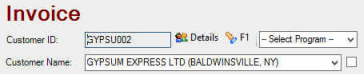
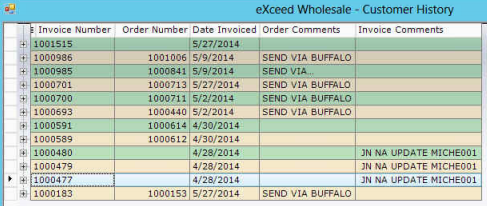
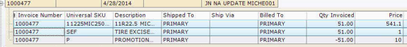
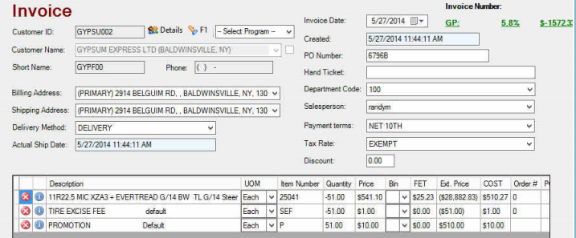
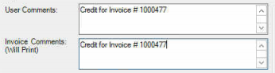

Create Return
At Home Screen: Start a task and select
- Enter Customer ID or Customer Name and enter to populate customer information in header

- Select in upper right corner. Customer history will display by invoice number

- Highlight Invoice to reverse and select ok
*Also, can reverse specific line items by opening invoice with + and select the specific line items to reverse. To select multiple items, hold CTRL key and make selections

Selection(s) will populate invoice with reverse quantities along with original price billed and original cost at the time of sale.

Make appropriate changes to quantities based on credit requested
- Copy Reference information from User Comments field (does not print) where auto populates to invoice comments that will print for customer reference. Add additional invoice comments if necessary.

- Print copies if needed
Not required to select process prior to save or save and close. Since you are already generating
an actual invoice, once save or save and close is selected this is a valid invoice. Selecting
process with only send invoice to Great Plains.
 Note: Will not cause any harm if selected but not necessary to select.
Note: Will not cause any harm if selected but not necessary to select.